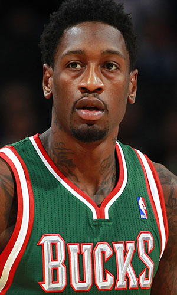

|  |
Матчи |
27 |
|
Передачи (всего/среднее) |
23 |
0.9 |
| В основе |
26 |
|
Подборы в защите (всего/среднее) |
99 |
3.7 |
| Время (всего/среднее) |
585:35 |
21:41 |
Подборы в атаке (всего/среднее) |
67 |
2.5 |
| Очки (всего/среднее) |
196 |
7.3 |
Подборы (всего/среднее) |
166 |
6.1 |
| 2-очковые броски (всего/среднее) |
86/172 |
3.2/6.4 |
Перехваты (всего/среднее) |
26 |
1 |
| 2-очковые броски (% реализации) |
50% |
|
Потери (всего/среднее) |
28 |
1 |
| 3-очковые броски (всего/среднее) |
0/0 |
0/0 |
Блокшоты (всего/среднее) |
39 |
1.4 |
| 3-очковые броски (% реализации) |
0% |
|
Блокшоты соперника (всего/среднее) |
17 |
0.6 |
| Штрафные броски (всего/среднее) |
24/48 |
0.9/1.8 |
Фолы (всего/среднее) |
104 |
3.9 |
| Эл Хорфорд |
Штрафные броски (% реализации) |
50% |
|
Коэффициент полезности (всего/среднее) |
191 |
7.1 |